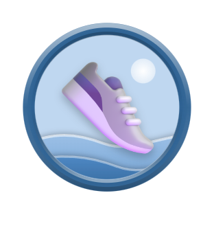
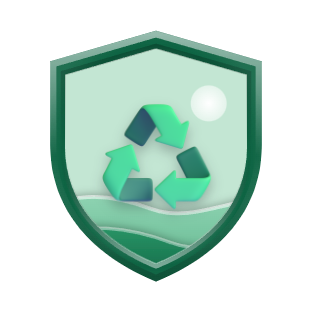
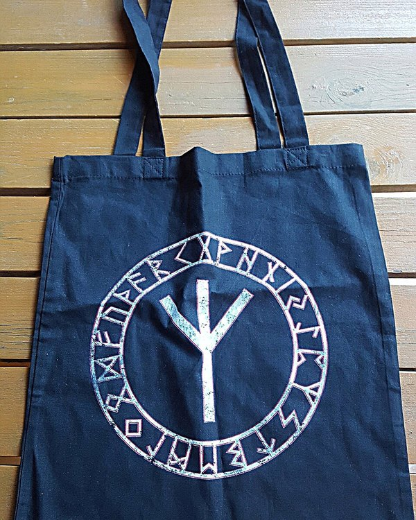

어디로 걸어야 할지 막막했던 플로깅은 이제 끝났습니다.
1,535개 CCTV 핫스팟 기반 AI 경로 추천으로 가장 안전하고 보람찬 코스를 안내받고,
YOLOv8 실시간 카메라 인식으로 비추기만 하면 5종 분리수거와 에코포인트 적립까지 한 번에 완성됩니다.
단순 최단거리가 아닙니다. 출발지와 도착지 사이의 CCTV 쓰레기 발생 핫스팟(K=3)을 경유하면서, 공장지대·위험 구역 폴리곤은 똑똑하게 우회하는 플로깅 전용 보행 코스를 설계합니다.
출발지와 도착지를 두 초점으로 하는 타원형 반경(1.5km~2.5km) 내 후보 거점을 필터링합니다. 무단투기 단속 CCTV 데이터와 주변 밀도를 기반으로 정화 우선순위 점수(Si)가 가장 높은 K=3 핵심 정화 거점을 선별합니다.
공장지대·대형 차도 등 보행에 부적합한 147개 회피 폴리곤(GeoJSON)과의 교차 길이를 실시간 검증합니다. 경로가 위험 구역을 통과할 경우, 회피 페널티가 낮은 차선 거점으로 즉시 교체(Safe Swap)하여 안전한 산책로를 찾아냅니다.
선정된 K=3 정화 거점을 연결하는 Tmap 보행자 도로망 폴리라인을 생성하고, 총 거리와 예상 소요시간 말풍선을 도착지 핀 위에 직관적으로 표시합니다. 마음에 들지 않으면 ‘코스 변경’ 버튼 한 번으로 새로운 경유 코스를 즉시 추천받습니다.
플로깅 중 주운 쓰레기를 일일이 손으로 입력할 필요가 없습니다. YOLOv8n (ONNX 640×640) 실시간 스트림 인식이 쓰레기 종류와 개수를 즉시 판별하고, 촬영 후 확인 시트에서 손쉽게 검증·담기까지 마칠 수 있습니다.
카드를 클릭하면 좌측 뷰파인더에서 해당 분류의 바운딩 박스가 강조됩니다. 카메라 인식 칩, 트래킹 수거 내역, 정산 도장 리포트까지 동일한 시맨틱 컬러로 일관되게 표현됩니다.
복잡한 메뉴 없이 누구나 직관적으로 사용할 수 있도록 설계된 PLOGGO의 핵심 화면 구성을 단계별로 확인해보세요.
앱을 켜면 현재 동네의 기온과 미세먼지 등급을 라임 포인트 칩으로 알려주고, Gemini 2.5 Flash가 요약한 최신 환경 뉴스가 티커로 흐릅니다. 하단 ‘나의 환경 영향력’ 카드에서 온실가스 감축량(kgCO₂eq)과 나무 식재 효과를 직관적인 반원 게이지로 확인하세요.
복잡한 설정 없이 지도를 탭해 도착지를 찍거나 장소를 검색하세요.
도착지 깃발 핀 위에 예상 거리와 시간(예: 2.4km · 38분)이 말풍선으로 뜨고,
경유할 정화지역 3곳이 초록 재활용 핀으로 표시됩니다.
트래킹이 시작되면 상단에는 추천 경로가 그려진 라이브 네이버 지도가, 하단에는 눈부심이 적은 차콜 다크 패널(#242926)이 배치됩니다.
화면이 꺼져도 Foreground Service로 GPS 경로가 끊김 없이 기록됩니다.
플로깅을 마치면 컨페티가 흩날리며 오늘 수거 개수와 무게가 적힌 대형 라임 도장이 화면을 흔들며 찍힙니다. 획득한 에코포인트와 경험치(+20 XP), 신규 달성 뱃지를 확인하고 인증샷 한 장으로 소속 그룹 피드에 활동을 공유할 수 있습니다.
혼자 뛰어도, 함께 뛰어도 즐겁습니다. 33종의 도전 과제 뱃지를 모으고, 적립한 에코포인트로 실제 기프티콘과 친환경 플로깅 용품을 교환하세요.
첫 걸음부터 누적 거리, 분류별 수거 달성, 우천·새벽 플로깅, 그룹 피드 공유까지. 활동을 마칠 때마다 조건이 자동 판정되어 화려한 획득 팝업과 함께 뱃지함에 기록됩니다.

첫 발걸음
분리수거 달인기본 100P와 쓰레기 1개당 20P로 차곡차곡 모은 포인트를 카페 음료, 편의점 상품권, 플로깅 집게·에코백으로 즉시 교환하고 내 쿠폰함에서 바코드로 사용하세요.

자유 가입 또는 승인제 그룹을 만들고, 실시간 채팅과 사진 앨범으로 소통하세요. 플로깅 정산 시 촬영한 봉투 인증샷은 이동 거리·수거 개수 카드와 함께 그룹 피드에 자동 공유됩니다.
청소년부터 중장년층까지 모든 시민이 편안하게 플로깅에 참여할 수 있도록 본문 최소 크기 15sp 이상, 행간 1.6, 모든 터치 타깃 최소 48×48dp, 흔들림 없는 고정폭 숫자(Tabular Figures) 조판을 엄격히 적용했습니다.